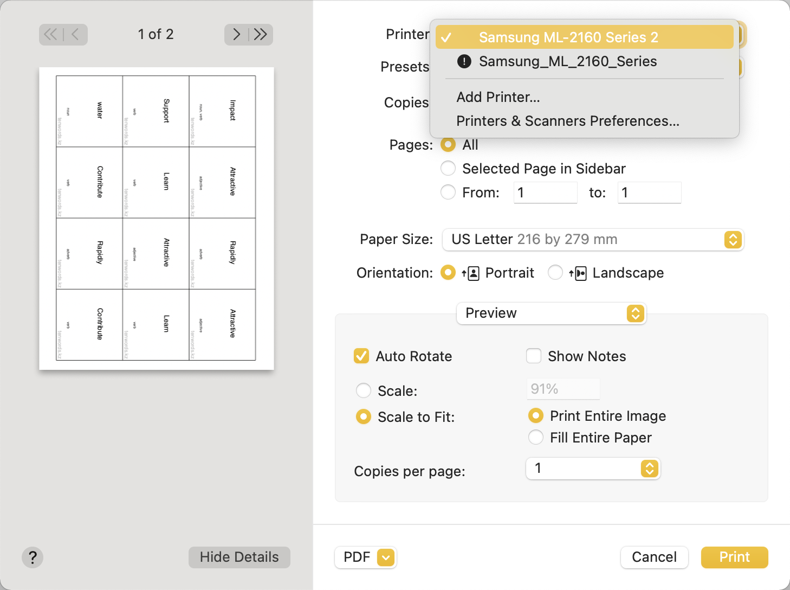
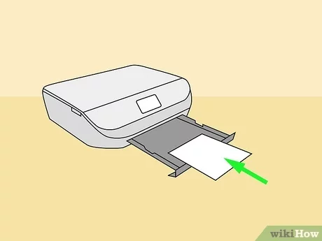
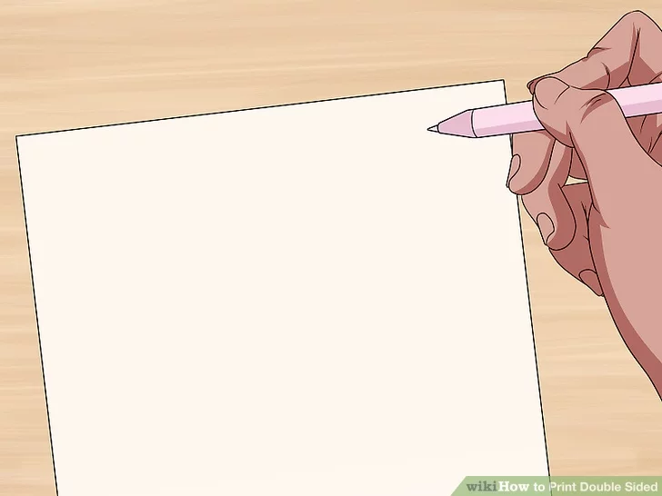
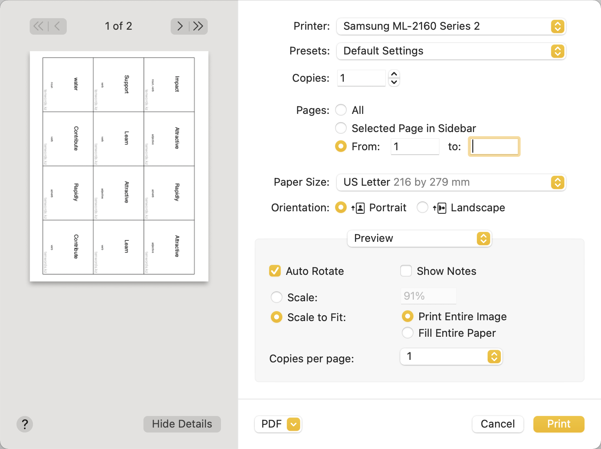
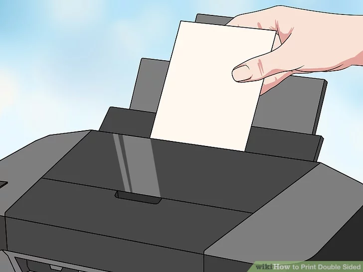
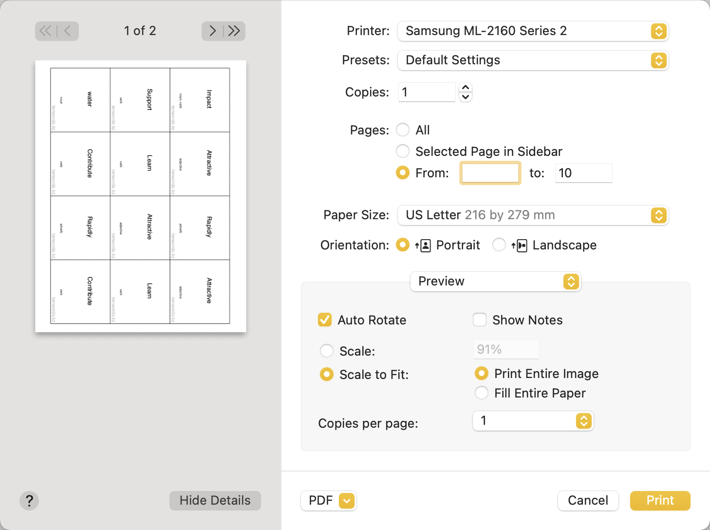
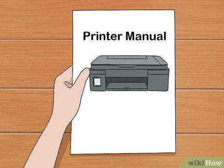

1. Make sure your printer is connected. You can see the name of the currently selected printer near the top of the "Print" window.
2. Place papers in the printer. Align the edges of the paper. If the paper is curies, flatten it. Move the stack of paper to the left and forward to the end. Make sure that your small mark is located on the left top and that it is faced up. Do not change the order of the papers.
3. Make a small pencil mark on the top paper. It should be on the top paper's face-up and top-left side, near the short edge that faces the printer.
4. Print the front pages. You need to write range from 1 to the middle.
5. Place the printed pages back in the printer so that your small mark is located on the right top and that it is faced down. Align the edges of the paper and move the stack of paper to the left and forward to the end.
6. Print back pages. You need to write range from the middle to the end.
1. Make sure your printer is connected. You can see the name of the currently selected printer near the top of the "Print" window.
2. Place papers in the printer. Align the edges of the paper. If the paper is curies, flatten it. Move the stack of paper to the left and forward to the end.
3. Print all pages. Follow the printer's instructions. You need to print pages from 1 to the end.
